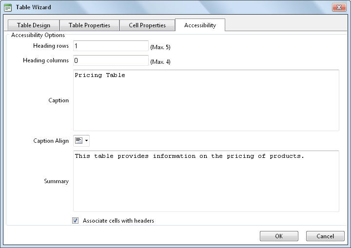

Setting Table Accessibility
How to set the accessibility of a new or existing table using the Table Wizard of the TelerikEditorProvider for the RTE. The below tutorial demonstrates how to add a background color to the first row of your table.
- Right-click on an existing table and select
 Table Properties - OR - Open the Table Wizard. See "Inserting a Table"
Table Properties - OR - Open the Table Wizard. See "Inserting a Table"
- Go to the Accessibility tab and set any of these Accessibility Options:
- In the Heading Rows text box, enter the number of rows which are headings. The maximum number of heading rows for the current table is displayed to the right of this field.
- In the Heading Columns text box, enter the number of columns which are headings. The maximum number of heading columns for the current table is displayed to the right of this field.
- In the Caption text box, enter a caption to be displayed above the table.
- At Caption Align, click the arrow of the Alignment Selector button and select the alignment of the caption.
- In the Summary text box, enter a summary of the table contents. The table summary isn't displayed on the page, but can be read using accessibility tools such as text readers.
- At Associate Cells With Headers, to associate cells with headers - OR - to disable.
- Optional. Select a new tab to set additional properties.
- Click the OK button.

Setting Table Accessibility